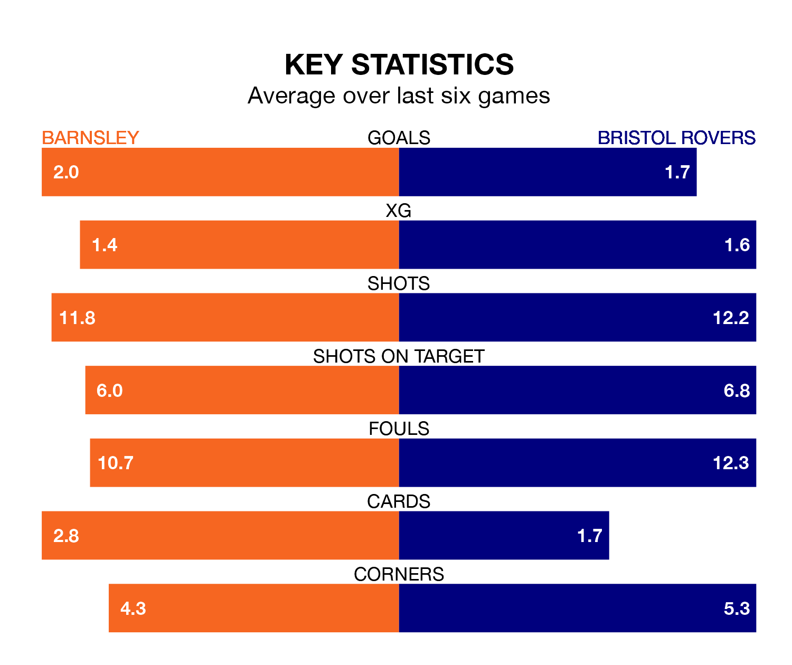

Barnsley face Bristol Rovers on Saturday seeking to protect their formidable unbeaten run in EFL League One.
The Tykes are unbeaten in eight, with four wins and four draws, ahead of the 3pm kick-off.
They face a Rovers team who have won three and drawn two over the same number of games.
With 46 goals in 24 games so far this season, Barnsley are the league's third-highest scorers with 1.9 goals per game. And they are conceding fewer than average, letting in 28 goals at a rate of 1.2 per game.
Rovers are also above average scorers, with 1.4 goals per game, compared to a league average of 1.3. They have also conceded 1.4 goals per game.
In Devante Cole, the Tykes have one of the league's sharpest shooters so far this season. He has notched 14 goals in 24 appearances, to sit third in the scoring charts.
His goal rate of one every 140 minutes is slightly quicker than that of Chris Martin, the Gas's top scorer with a goal every 123 minutes, and a total of eight goals in 16 games.
The home side are sixth in the table after 24 games, of which they have won 12 and drawn seven, earning 43 points.
The visitors are five places behind Barnsley in 11th, with nine wins and seven draws putting them on 34 points.
In the last three years, Barnsley and Rovers have played each other on three occasions. Barnsley won one of them and they drew the other.
Their last meeting was on August 12, when they played out a 1-1 draw.
Barnsley's last match was on January 1, a 1-1 draw against Wigan Athletic, with Cole getting the goal for the Tykes.
Rovers lost 3-2 against Wycombe Wanderers last time out, also on January 1, with Martin on the scoresheet.
Saturday's match will be refereed by Scott Jackson, who has taken charge of three EFL League One games so far this season, issuing no red cards and booking 12 players. He has not awarded any penalties.
The last Barnsley game Jackson refereed was a 1-0 away win against Exeter City on October 7. He is yet to oversee a match featuring Rovers this season.
Updated: 13:38 (UTC), 10/01/24